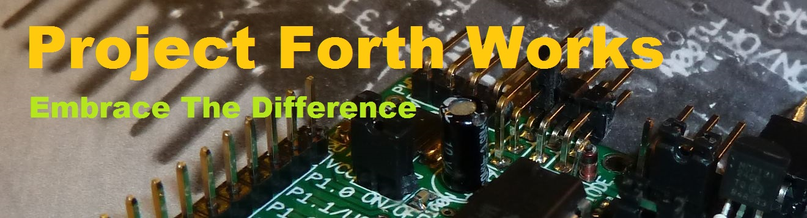
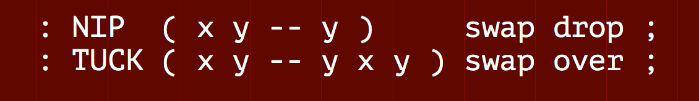
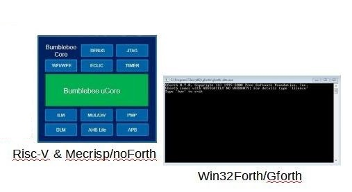
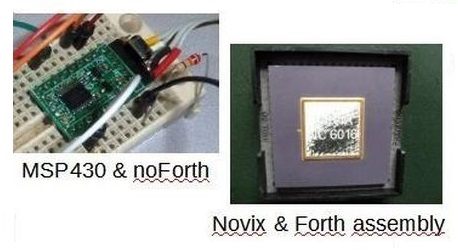
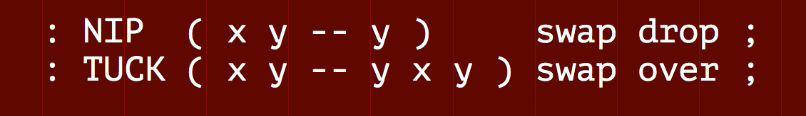

In addition other implementations can be added in any dialect/version/standard of Forth, and covering any CPU. Having multiple solutions in different dialects of Forth is really seen as a benefit in this project!
And we're really serious in embracing the differences. The example in the generic Forth is always the starting point, but examples in any Forth dialect and for any other CPU can be added to the original idea. The more, the better. And different solutions for the same problem are also very welcome.
The project can also be a place to ask for help when you are stuck or stranded somewhere. Say you have trouble interfacing to a certain periferal. The project could already contain a solution. Or help you find somebody who has a solution. Or help you find somebody with whom you could partner up to try to find a solution together. Add something like a different implementation, to an already existing topic. This can be an alternative way of solving the problem. Or it can be a more specific implementation in a different dialect, or a solution for a different CPU.
Add something like a different implementation, to an already existing topic. This can be an alternative way of solving the problem. Or it can be a more specific implementation in a different dialect, or a solution for a different CPU.
A short description of the difference of a new implementation plus the source are all that is need. But you can add interesting facts if you like to do so. For instance benchmarks or maybe there are known limitations to your solution, maybe you know who invented your algorithm. Etcetra, etcetra. Lets learn and have fun!
Visit the Project Forth Words repository at Github.
You need some basic knowledge of git in order to easily get a local copy of the existing ideas as well as to contribute in an uncomlicated way. We have put together a simple guide to the most important git commands.
 See implemention examples of a some frequently used Forth words, that we did not (yet) selected for the Generic Forth word set.
Project Forth Works
What this project is all about ...
Forth would benefit greatly from an active community sharing sources and solutions. But our problem lies in the saying: 'When you have seen one Forth, you have seen one Forth'. With this project we would like to embrace our differences. And start sharing, despite having all the different Forths-dialects.Core idea
 The core idea of this project is to use a simple, generic version of Forth to spread ideas, algorithms, protocols, applications and hardware drivers. This generic version of Forth guarantees that it can be understood and used by (almost) everybody in the Forth-community.In addition other implementations can be added in any dialect/version/standard of Forth, and covering any CPU. Having multiple solutions in different dialects of Forth is really seen as a benefit in this project!
Structure
 Without some structure this project is doomed to fail. That is why a standard structure for each topic is envisioned. The idea is to start with a description of the idea/algorithm, clarify that idea or algorithm in pseudo code and add an example implementation in Generic Forth (see below). Links to more detailed information, a description of any pitfalls encountered, etc. are also very welcome.And we're really serious in embracing the differences. The example in the generic Forth is always the starting point, but examples in any Forth dialect and for any other CPU can be added to the original idea. The more, the better. And different solutions for the same problem are also very welcome.
The project can also be a place to ask for help when you are stuck or stranded somewhere. Say you have trouble interfacing to a certain periferal. The project could already contain a solution. Or help you find somebody who has a solution. Or help you find somebody with whom you could partner up to try to find a solution together.
Participate
If you want to participate, the two main things you can do are:1) Add code to an existing topic
Add something like a different implementation, to an already existing topic. This can be an alternative way of solving the problem. Or it can be a more specific implementation in a different dialect, or a solution for a different CPU.
A short description of the difference of a new implementation plus the source are all that is need. But you can add interesting facts if you like to do so. For instance benchmarks or maybe there are known limitations to your solution, maybe you know who invented your algorithm. Etcetra, etcetra. Lets learn and have fun!
2) Initiate a new topic
You can initiate a new topic. Upload any project or algorithm worth sharing in the appropriate category, and describe it as detailed as is useful. How to do that is explained below.How to describe an new topic?
- Describe the problem that is solved
- Give some possible usage examples (if not self evident)
- Give a detailed description of the algorithm solving the problem
- Then a more logical decription in pseudo code
- Add a Generic Forth code example, with the focus on clarity rather than efficiency or aesthetics
- Add any background documention and decribe encountered pitfalls etc.
- Add an implementation (or more than one) in your preferred Forth dialect/CPU
- When it is an unfinished project, also describe as much as is possible of the problem(s) you encountered
Visit the Project Forth Words repository at Github.
You need some basic knowledge of git in order to easily get a local copy of the existing ideas as well as to contribute in an uncomlicated way. We have put together a simple guide to the most important git commands.
 See implemention examples of a some frequently used Forth words, that we did not (yet) selected for the Generic Forth word set.